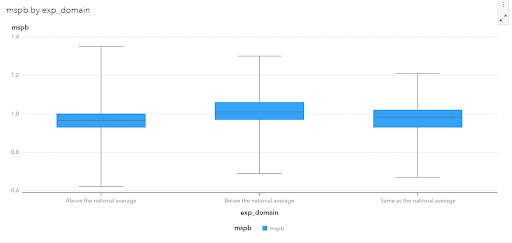
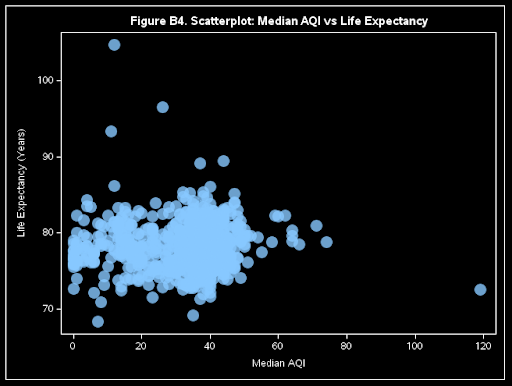
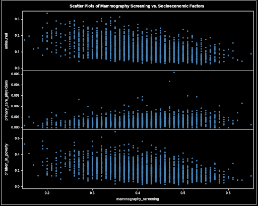
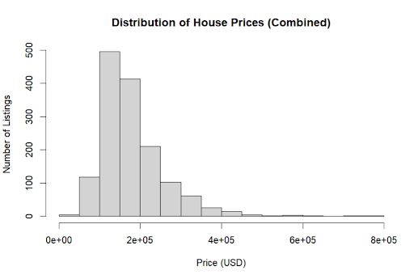
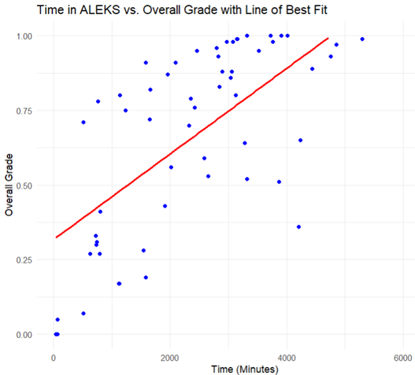
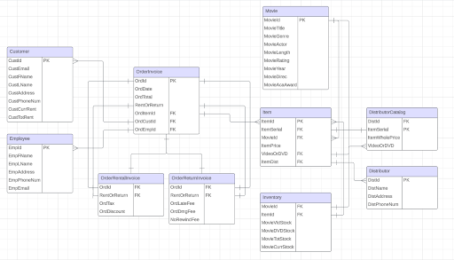

~Featured Portfolio Items~
DELCO Tobacco Retailers Impact
This project examines the longitudinal growth and spatial distribution of tobacco and vape retailers in Delaware County, Pennsylvania from 2018 to 2024. Using compliance data from the Pennsylvania Department of Health and geospatial layers from census and state sources, I applied statistical modeling in R and spatial analysis in ArcGIS to evaluate retailer density, demographic proximity, and distance to public schools. The analysis demonstrates how retail environments can influence community-level exposure patterns and provides a replicable framework to inform zoning, prevention strategy, and equity-focused public health planning.
Tags: Geospatial Mapping, Healthcare/Public Health Analysis, Regression Modeling/Analysis, R
Medicare Spending Analysis
This project analyzes whether hospital patient experience performance is associated with differences in Medicare Spending per Beneficiary using national CMS data. After integrating hospital general information with spending metrics in SAS Viya, a one way ANOVA was conducted to compare average Medicare spending across patient experience performance categories. The results revealed statistically significant differences, with hospitals rated below the national average in patient experience demonstrating higher average spending per beneficiary. The analysis highlights a measurable relationship between patient engagement performance and cost efficiency, demonstrating applied healthcare analytics, inferential statistical modeling, and performance based financial evaluation.

Tags: Healthcare/Public Health Analysis, Financial Analysis, SAS
Hospital Quality and Air Pollution
This project analyzes the relationship between healthcare technology adoption, environmental exposure, and health outcomes using SAS Viya and SQL. The first analysis evaluates whether acute-care hospitals that meet electronic health record interoperability standards are associated with higher CMS five-star quality ratings, applying chi-square testing to assess statistical independence. The second examines the relationship between particulate matter levels and county-level health indicators, including diabetes prevalence, low birthweight, mental distress, general health status, and life expectancy, using Pearson correlation analysis. Drawing from large-scale national datasets, the project demonstrates applied statistical testing, data cleaning, and exploratory analysis to evaluate how digital transformation and environmental conditions influence healthcare quality and population health trends.

Tags: Healthcare/Public Health Analysis, Population Studies, SAS, SQL
Mammography & Socioeconomic Predictors
This project examines the relationship between mammography screening rates and key socioeconomic determinants using county-level data and multiple linear regression in SAS Viya. After integrating demographic, clinical care, and social economic datasets, exploratory analysis and visualization were conducted to assess trends between preventive screening participation and factors such as uninsured rates, child poverty, and primary care physician availability. The final regression model demonstrated statistically significant relationships across all predictors, with higher uninsured and poverty rates associated with lower screening participation and greater access to primary care linked to increased screening uptake. This analysis highlights the structural influence of socioeconomic and healthcare access conditions on preventive health behavior and demonstrates applied regression modeling, data integration, and public health analytics to evaluate disparities in healthcare utilization.

Tags: Healthcare/Public Health Analysis, Regression Modeling/Analysis, SAS
Real Estate Modeling
This project involved building and validating a multiple linear regression model to predict residential sale prices in Ames, Iowa using structured training and testing datasets in R. After conducting exploratory analysis to assess distribution patterns and key market characteristics, I developed a model that explained approximately 84.7 percent of the variability in housing prices. Significant predictors included overall home quality, living area, basement square footage, lot size, and year built. Model performance was evaluated using out of sample testing and achieved a Mean Absolute Percentage Error of approximately 15 percent, demonstrating strong practical accuracy. This project highlights applied predictive modeling, feature evaluation, statistical validation, and end to end model development for real world forecasting.

Tags: Business Systems Implementation & Analysis, Regression Modeling/Analysis, Financial Analysis, R
Math Education Analysis
This project evaluated the effectiveness of the ALEKS adaptive learning platform in Harrisburg University's pre algebra courses by comparing student outcomes between technology assisted sections and traditional lecture sections. Using historical and recent course data, I built and analyzed a structured dataset using PostgreSQL, Excel, and R, applying statistical methods including two sample t tests and chi squared tests to examine differences in overall grades and pass rates. The results indicated no statistically significant difference in achievement between the two instructional approaches, though analysis revealed a positive relationship between time spent in the ALEKS system and student performance. While the findings suggest the software did not significantly change pass rates in the short term, the study provides an analytical framework for evaluating instructional technology and highlights the importance of longitudinal data when assessing educational interventions.

Tags: SQL
Johnson Database
This project involved the design and implementation of a fully normalized relational database to replace Johnson Video Store's manual, paper based record keeping system. The solution centralizes rental and return transactions, inventory management, distributor catalog data, and stakeholder records within a structured SQL environment governed by clearly defined constraints and referential integrity. Developed from conceptual Entity Relationship modeling through physical schema implementation and data validation, the system supports day to day operations while enabling advanced analytical querying for inventory optimization, procurement planning, and performance evaluation. The project demonstrates applied database design principles, normalization practices, and the effective translation of business requirements into a scalable and reliable data architecture.

Tags: Business Systems Implementation & Analysis, Relational Databases, SQL